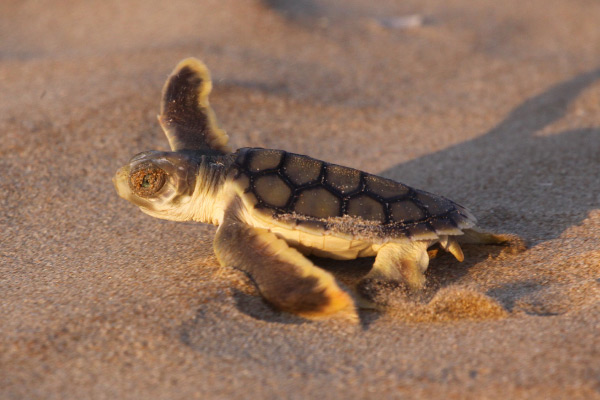

Flatback Turtles aren't yet endangered, but are currently listed as vulnerable! There are many factors leading them down the road of endangerment :(
Costal species such as the flatback turtle are vulnerable to changed in beach environments. Nesting and hatchling survival depends on specific environment conditions, which includes suitable sand temperatures, adequate shade from coastal vegetation, stable beach elevations, and protection from flooding due to storm surges and overwash.
Flatbacks also face numerous threats throughout their nesting range, including pollution, artificial lighting, beach development and modification, predatirs, rising sea-levels, and increased ocean and beach temperatures.